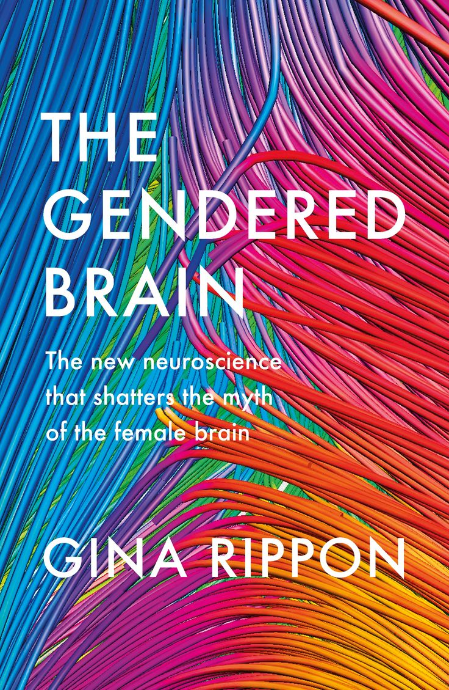
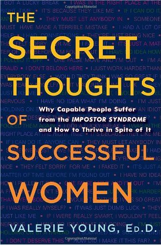

Open Book Club is a community of passionate readers who come together to share their love of books. We meet
twice a week to discuss books on current affairs and explore different literary genres.
Whether you are a seasoned bookworm or just starting your reading journey, we welcome everyone to join our discussions and
discover new favorite authors.
Books Gallery

The Gendered Brain
Gina Rippon challenges the notion that male and female brains are fundamentally different. Rippon, a neuroscientist, argues that many gender stereotypes about cognitive abilities and behaviors are based on outdated and flawed science. She uses current neuroscience research to debunk myths of inherent differences between male and female brains, emphasizing that the brain is highly plastic and shaped by environment and experience rather than biological sex. The book promotes the idea that social influences, rather than innate brain differences, play a key role in shaping gendered behavior.
Our Bodies Their Battlefield
This book is a powerful examination of sexual violence in conflict zones around the world. The book documents the stories of women who have experienced horrific acts of violence during wars, from conflicts in Bosnia to the Democratic Republic of Congo, and sheds light on how sexual violence is used as a weapon of war. Lamb, an experienced war correspondent, gives voice to survivors and highlights the often-overlooked impact of war on women, aiming to bring awareness to their suffering and advocate for justice and accountability.

The Impostor Syndrome
Valerie Young explores the phenomenon of impostor syndrome, where individuals—often high-achieving women—feel like frauds despite evidence of their competence. Young delves into the causes of impostor syndrome, highlighting how upbringing, societal expectations, and internalized beliefs contribute to feelings of inadequacy. She categorizes different "impostor types" and provides practical strategies for overcoming self-doubt, changing negative thought patterns, and embracing one's achievements. The book aims to empower readers to overcome impostor feelings and build confidence.
Meet Up. Devour some literary works.
"Joining this book club has been the highlight of my month. I've found not only amazing books but also incredible friends." -Bryce R. - teacher/frequent reader since 2018
"The discussions are lively and thought-provoking. It's amazing how every meeting brings new perspectives to stories I thought I knew well." -Michelle S. - financial advisor/frequent reader since 2020